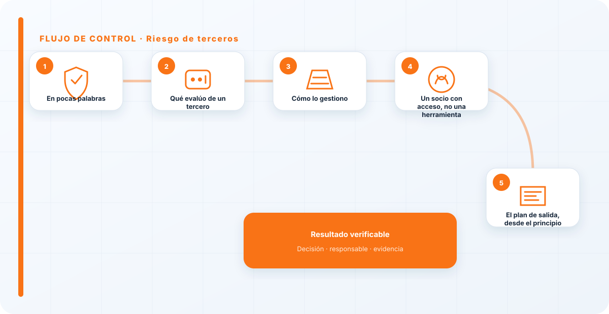
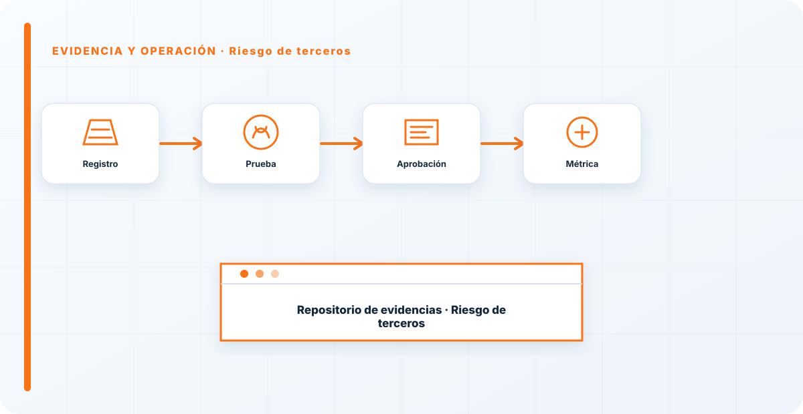

En pocas palabras
Cada proveedor de IA que usas es una extensión de tu superficie de riesgo. Su fallo puede ser tu incidente, su brecha puede ser tu fuga. El riesgo de terceros consiste en evaluar y gestionar esa dependencia: qué datos les das, qué hacen con ellos, qué garantías te ofrecen y qué pasa si algo les pasa a ellos. Con la prisa por adoptar IA, es lo primero que se salta, y es un error caro.
Qué evalúo de un tercero
Su seguridad, qué hace con tus datos, sus garantías contractuales, su cumplimiento normativo y qué ocurre si le pasa algo a él. Un proveedor de IA con acceso a tus datos hereda tu exposición: si él tiene una brecha, tus datos están en esa brecha, aunque tú hayas hecho todo bien.
Por eso la evaluación no va solo de "¿es bueno el producto?", sino de "¿qué riesgo asumo al darle acceso a mi información y confiarle mis decisiones?".
Cómo lo gestiono
Con la disciplina de evaluación de terceros de siempre, adaptada a la IA: qué datos le doy, con qué permisos, qué se compromete a hacer con ellos por contrato, y un plan por si falla o desaparece. Se apoya en el registro de riesgos, donde el riesgo de cada proveedor vive con dueño y tratamiento.
No se trata de desconfiar de todo el mundo, sino de saber qué asumes con cada proveedor y de no descubrirlo el día del incidente.

Un socio con acceso, no una herramienta
El cambio de mentalidad que pido es dejar de ver a un proveedor de IA como una herramienta que instalas y empezar a verlo como un socio con acceso a tu información. Una herramienta la controlas tú; un socio con acceso comparte tu riesgo. Y esa diferencia cambia cómo lo eliges, qué le exiges y qué vigilas.
Confiar en un proveedor por su marca, sin evaluarlo, es dar las llaves de casa a alguien porque tiene buena reputación. La reputación ayuda, pero no sustituye a mirar qué hace con lo que le das.
El plan de salida, desde el principio
Una parte del riesgo de terceros que casi nadie contempla al empezar: qué pasa si el proveedor desaparece, sube el precio de golpe, cambia sus condiciones, o sencillamente deja de funcionar. Depender por completo de un tercero sin plan B es asumir su destino como propio. Por eso, desde el principio, me pregunto cómo migraría fuera de ese proveedor si tuviera que hacerlo.
No siempre hay alternativa fácil, pero tener pensada la salida —tus datos exportables, tu arquitectura no atada a una sola API— cambia tu posición de negociación y tu exposición. Un proveedor del que no puedes salir no es un proveedor, es una dependencia con la que estás casado sin capitulaciones.
Con la prisa por adoptar IA, la evaluación de proveedores es lo primero que se salta, y es un error caro: estás dando tus datos y confiando tus decisiones a un tercero que no has mirado. Un proveedor de IA no es una herramienta que instalas, es un socio con acceso. Trátalo como tal antes de darle las llaves, no después del incidente.
Los errores que veo una y otra vez
- Adoptar proveedores de IA sin evaluarlos.
- No saber qué hacen con tus datos.
- Trabajar sin garantías contractuales claras.
- No tener plan si el proveedor falla.
- Confiar por la marca en vez de por la evaluación.
Cómo lo llevaría a un entorno real
Cuando aterrizo riesgo de terceros en una organización, no empiezo por comprar una herramienta ni por redactar veinte páginas. Empiezo por dibujar qué ocurre hoy: quién solicita el cambio, quién lo aprueba, qué sistemas intervienen, qué datos cruzan el proceso y quién se entera cuando algo falla. Ese dibujo suele descubrir más problemas que cualquier checklist. En cadena de suministro, lo peligroso no es solo carecer de controles; también lo es creer que existen porque alguien los escribió una vez.
Después separo lo imprescindible de lo deseable. Lo imprescindible debe poder comprobarse: un responsable identificado, una regla clara, una evidencia fechada y un mecanismo para reaccionar. En este caso revisaría especialmente Riesgo, terceros y responsable. No me vale una respuesta del tipo «lo gestiona el proveedor» o «eso lo mira seguridad». Necesito saber qué persona toma la decisión, con qué información y dentro de qué plazo.
La implantación debe crecer con el riesgo. Un piloto interno puede funcionar con una ficha breve y una revisión manual. Un sistema que afecta a clientes, empleados, dinero o información sensible necesita segregación de funciones, pruebas independientes, monitorización y un expediente mantenido. Mi criterio es sencillo: cuanto más difícil sea deshacer el daño, más fuerte debe ser la barrera antes de producción.
Decisiones que deben quedar por escrito
Hay decisiones que no deberían vivir en una reunión ni en un mensaje de chat. Para riesgo de terceros dejaría documentados el alcance, los supuestos, los límites de uso, las excepciones aceptadas y las condiciones que obligan a detener o reevaluar. El documento no tiene que ser enorme, pero sí debe permitir que otra persona entienda por qué se hizo lo que se hizo.
También registraría quién puede cambiar control, quién valida evidencia y quién recibe las alertas relacionadas con Riesgo. Cuando esas tres responsabilidades se mezclan, aparece el clásico problema: el mismo equipo construye, aprueba y declara que todo funciona. No siempre se puede separar por completo, sobre todo en organizaciones pequeñas, pero al menos debe existir una revisión por alguien que no dependa del éxito inmediato del despliegue.
Las excepciones merecen un tratamiento propio. Una excepción sin fecha de caducidad acaba convirtiéndose en la arquitectura real. Por eso exigiría motivo, riesgo aceptado, responsable, compensaciones, fecha de revisión y criterio de cierre. Si falta uno de esos elementos, no es una excepción gestionada; es una deuda invisible.

Un ejemplo práctico
Imaginemos que un equipo quiere incorporar riesgo de terceros a un servicio que ya está en producción. La propuesta promete reducir tiempos y automatizar tareas, pero utiliza componentes que cambian con frecuencia. Antes de aprobarlo, pediría una prueba limitada, un inventario de dependencias, un flujo de datos y una definición clara de qué acciones quedan fuera del alcance.
Durante la prueba recogería resultados normales y casos límite. No solo miraría si funciona; comprobaría qué ocurre cuando faltan datos, cambia una versión, se pierde conectividad, llega una entrada manipulada o un usuario intenta superar sus permisos. Ahí es donde se ve si el diseño aguanta. En muchas pruebas felices todo parece seguro porque nadie ha intentado romper la hipótesis de partida.
Si los resultados son aceptables, la salida a producción tendría condiciones: versión fijada, configuración aprobada, logs disponibles, responsables de guardia, procedimiento de rollback y revisión tras las primeras semanas. Si alguno de esos elementos no existe, prefiero retrasar el despliegue. Un día de demora suele ser más barato que investigar después un comportamiento que nadie puede reconstruir.
Qué evidencias guardaría
Para demostrar que el control funciona conservaría evidencias que cuenten una historia completa, no capturas sueltas. La historia debe enlazar necesidad, decisión, implementación, prueba y operación. En riesgo de terceros eso incluye como mínimo la ficha del activo, el diagrama vigente, la configuración aprobada, el resultado de las pruebas y el registro de cambios.
No guardaría información por acumular. Si los logs contienen prompts, documentos, datos personales o secretos, aplicaría minimización, control de acceso y retención. La evidencia debe ayudar a investigar y auditar sin crear una segunda fuga de información. Es frecuente endurecer el sistema principal y dejar un repositorio de evidencias abierto a demasiadas personas.
- Propietario y finalidad de riesgo de terceros, con fecha de revisión.
- Inventario de Riesgo, terceros y dependencias asociadas.
- Criterios de aceptación y resultados sobre responsable y control.
- Configuración efectiva, versión y aprobación del cambio.
- Alertas, incidentes, excepciones y acciones correctivas cerradas.
Señales de que el control no está funcionando
El primer síntoma es que nadie sabe responder con rapidez quién es el responsable. El segundo es que la documentación describe una versión distinta de la que está operando. El tercero es que las alertas existen, pero llegan a un buzón que nadie revisa. Cuando aparecen esos tres síntomas, el problema no es tecnológico: el control se ha desconectado de la operación.
También desconfío de las métricas demasiado perfectas. Cero incidentes, cero excepciones y cien por cien de cumplimiento pueden significar excelencia, pero con frecuencia significan que no estamos mirando. Prefiero indicadores que enseñen tendencia: tiempo de corrección, antigüedad de excepciones, cobertura de pruebas, cambios sin revisión y reincidencias.
Por último, revisaría el comportamiento después de cada cambio significativo. En IA, una actualización de modelo, dataset, prompt, herramienta, permiso o proveedor puede alterar el riesgo sin cambiar el nombre del servicio. Si el proceso solo reevalúa cuando se crea un proyecto nuevo, se quedará ciego durante la mayor parte de la vida útil.
Mi criterio de cierre
Considero que riesgo de terceros está razonablemente controlado cuando el equipo puede explicar el proceso sin depender de una sola persona, reconstruir una decisión con evidencias y detener el servicio sin improvisar. No busco perfección documental; busco que la organización pueda tomar decisiones repetibles bajo presión.
El cierre no consiste en marcar todas las casillas. Consiste en demostrar que los riesgos relevantes tienen propietario, que los controles se prueban y que las desviaciones producen una acción. Si la evidencia no cambia ninguna decisión, probablemente estamos generando burocracia. Si una decisión importante no deja evidencia, estamos creando fragilidad.
Este enfoque es el que intento mantener en toda CyberLibrary AI: explicar el control de forma que lo entienda negocio, pero con suficiente profundidad para que arquitectura, seguridad, auditoría y operaciones puedan aplicarlo de verdad.
Referencias y marcos relacionados
Contenido educativo y técnico. No sustituye asesoramiento jurídico ni una auditoría formal.